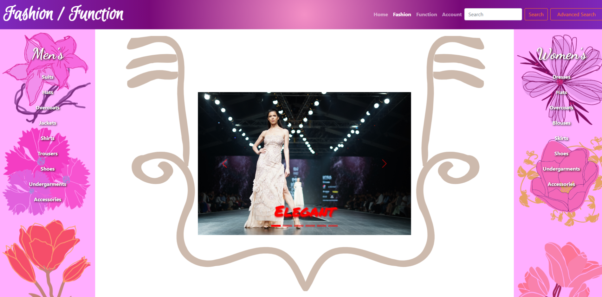
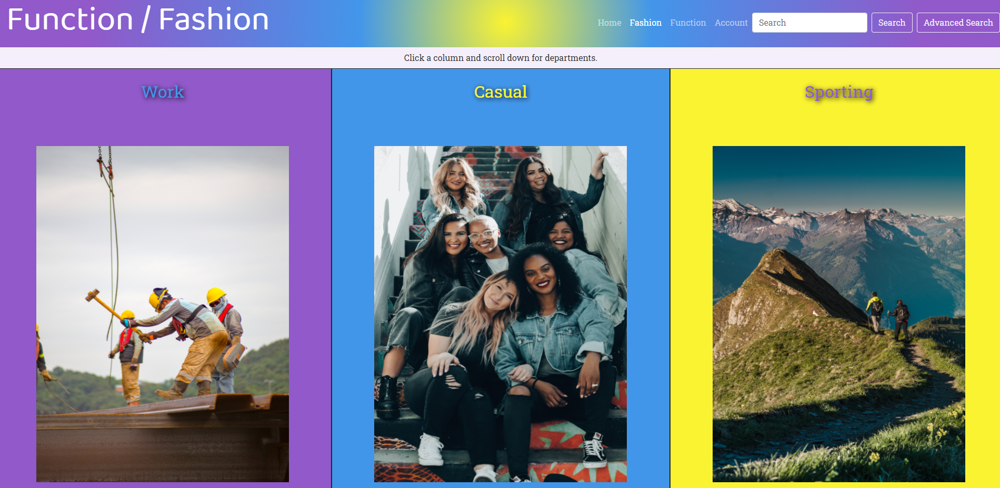
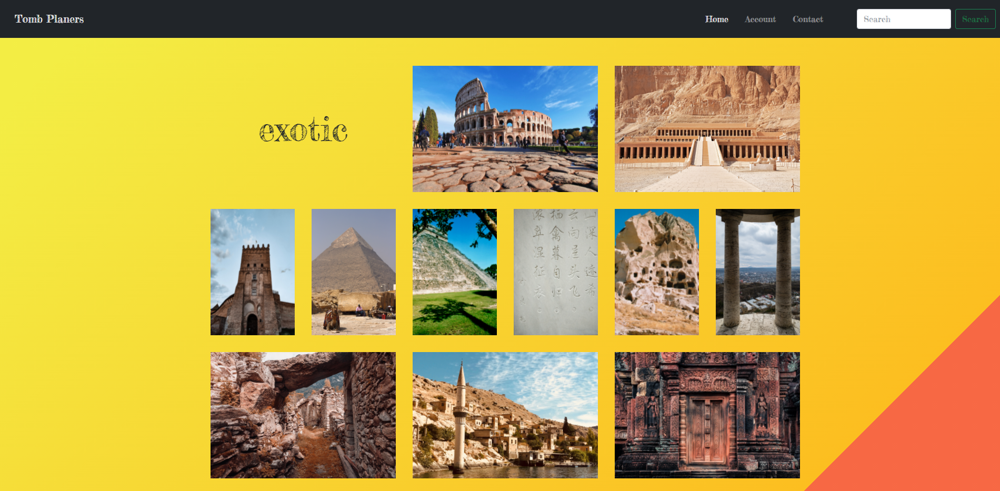

Welcome to Blaine DeYoung's personal webserver! What can I do for you today?
My problem with establishing a career has always been I wasn't sure exactly what I wanted to do. I've considered and made strong motions toward becoming a biologist, a chemist, and a mathematician, with some shorter spasms toward philosophy, law, literary scholarship, and business.
I was in college forever because it turns out that taking two classes from every college in a university doesn't add up to a degree. When I was finally informed that if I didn't graduate that year they were going to cut off my funding, I did an audit of my credits and decided that the shortest path to a degree was English Literature. English classes don't have the same linear progression that most majors do. It doesn't really matter if you take Shakespeare before Romance Literature. And that's how I came to have that Bachelor's Degree. I was only one class short of a minor in chemistry, and I think three classes short of a minor in math.
After I got an English degree because of its expedience, I briefly considered a career in literary scholarship. I have this theory about Milton's Paradise Lost that is the kind of thing that becomes a basis for such a career, but I wasn't really motivated to do that and it didn't seem like a very practical pursuit. So I stayed in college and got a Master's in Computer Science which has been a consistent interest of mine since childhood.
Looking at the available concentrations for Master's Computer Science programs, I immediately gravitated toward Bioinformatics because biology has been one of the central pre-occupations of my life. That means I spent, more or less, half my time taking computer classes and half taking biology classes. But it turns out that really isn't a very good way to study bioinformatics, and I had a hard time getting a job. The college really should develop a program geared directly toward that specialization or quit saying they have such a program.
After college my father passed away and left me a small inheritance. A smarter person might have put that money into a retirement account, but I decided to take some time off to think about what I was going to do. I eventually decided web development was going to be my career path because I like it and there's plenty of demand, but I'd barely stratched the surface of that in college. So I went to V School and learned MERN stack development.
Quite to my surprise, the first job offer I got after V School was as a Bioinformatician working for the state. So I decided to give that a go, but the lab really didn't need me. The researchers all knew how to do the computer stuff they needed for their research, so after a six month contract they didn't offer me a permanent position. That was just about the time Covid-19 wrecked the economy. I bet those biologists really wish I was still working with them!
Now I have the eternal problem of looking for the few years of job experience that virtually every job requires. So I'm building this portfolio site to showcase my skills and hopefully get a job.
I'm bright. I'm capable. I'm mature. And I have enough life experience to know that anything I don't know I can learn at speed.
Thank you for reading this and I hope we can have a mutually beneficial collaboration. Best regards, Blaine.
-
This portfolio site

This website is hosted by the Apache webserver on my personal AWS EC2. The domain "blainedeyoung.com" is registered with Route 53 and is routed to an elastic IP attached to that EC2. The domain also has an alias, so either "blainedeyoung.com" or "www.blainedeyoung.com" reaches the same site. The site itself uses HTML, custom SCSS, and simple javascript. The code is available on Github.
-
The landing page
Clicking on any of the images listed in any of the projects menus will redirect you to that page (except the one representing this page.) I invite you to visit any of the websites presented here (including this one) on mobile devices or indeed monitors of any size. In fact, I hope you will. Coding the responsive behaviors was the hardest part of making the sites. It would be a shame if no one appreciated them.
-
Fashion Over Function
My idea for the first two sites is a store that sells a wide variety of cloths. They've decided to divide their offerings into two groups, cloths that are worn because they look good (Fashion over Function) and cloths that are worn because they're good for something (Function over Fashion). This seems like a highly questionable marketing strategy to me, but hey, I just make the websites. The code is available on Github.
-
Function Over Function
Continuing the theme of the clothing store, we have another website made with mostly the same technology and resources from the same open source sites. It has a different layout, color scheme, and some different components and so hopefully evokes a different mood. The code is available on Github.
-
Tomb Planers
At Tomb Planers the motto is "It's not just a trip. It's an adventure!" It's a travel agency that offers package destination vacation deals. This site features a javascript app a little more sophisticated than what I've demonstrated so far (but check out my react apps to see some js magic). The code is available on Github.
These sites are mock-ups, front-end stubs. Links won't go anywhere. Buttons and form elements may or may not do anything. I'm making them as an exercise in design and CSS. They use themed Bootstrap 5.0.1. Look for a grey aboutPanel at the bottom of each site for information about the content and functionality.
-
some other site
Some other site I haven't made yet. The code is available on Github.
-
emailblainedeyoung@gmail.com
-
linkedinblainedeyoung
-
githubblainedeyoung
Photo by Sonika Agarwal on
Unsplash